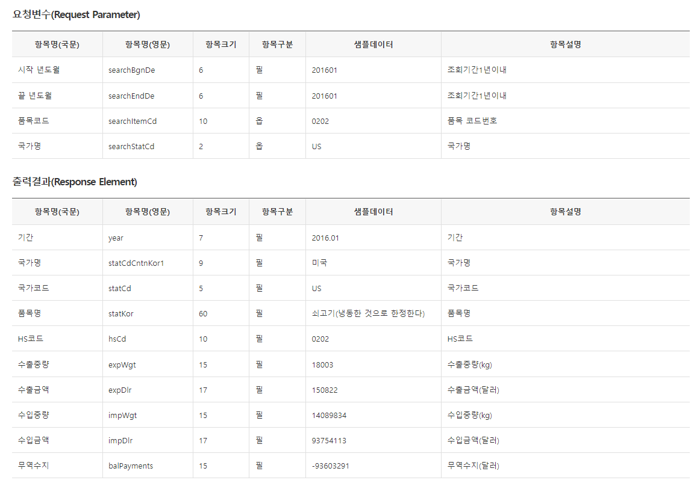

관세청 수출입실적 쉽게 수집하기
공공데이터 포털에서 제공하는 open API가 7천여개 정도 있으며 해당 사이트에서는 이용자들이 API를 쉽게 이용할 수 있도록 샘플코드를 다음과 같이 제공하고 있습니다.
# install.packages("httr")
#
# library(httr)
# GET('http://openapi.customs.go.kr/openapi/service/newTradestatistics/getNitemtradeList?
# serviceKey=ServiceKey&searchBgnDe=201601&searchEndDe=201601&searchItemCd=0202&searchStatCd=US')
위 코드는 사실 이용하기 힘듭니다… 그래서 새로운 방법으로 API수집을 위한 코딩이 필요하죠. 이번 포스팅에서는 관세청 수출입실적 open API를 수집하는 함수를 만들어보겠습니다.
관세청 수출입실적은 아래 그림처럼 시작년도월, 끝년도월, 품목코드, 국가명을 요청하면 요청값에 맞는 수출입실적 데이터를 출력해주는 API입니다.

요청하는 url를 확인해보면 다음과 같습니다.
http://openapi.customs.go.kr/openapi/service/newTradestatistics/getNitemtradeList?
serviceKey=ServiceKey&
searchBgnDe=201601&
searchEndDe=201601&
searchItemCd=0202&
searchStatCd=US
굵은 글씨만 바꿔서 url를 만들 수 있도록 하는 것이 첫번째 목표입니다. 각 요청값을 인자로 받아 요청url을 만들어주는 함수를 만듭니다.
one_getNitemtradeList <- function(ServiceKey, startpoint, endpoint, hscode, country){
url <- paste0("http://openapi.customs.go.kr/openapi/service/newTradestatistics/getNitemtradeList?ServiceKey=",
ServiceKey,
"&searchBgnDe=", startpoint,
"&searchEndDe=", endpoint,
"&searchItemCd=", hscode,
"&searchStatCd=", country)
return(url)
}
myurl <- one_getNitemtradeList('ServiceKey', '201601', '201612', '0202', 'US')
myurl
[1] "http://openapi.customs.go.kr/openapi/service/newTradestatistics/getNitemtradeList?ServiceKey=ServiceKey&searchBgnDe=201601&searchEndDe=201612&searchItemCd=0202&searchStatCd=US"여기서 paste0() 함수는 각 문자열을 빈칸없이 이어서 출력해줍니다.
paste0('a', 'b', 'c')
[1] "abc"공공데이터포털에서 제공하는 API중 상당부분이 XML형식으로 제공하고 있습니다. 관세청 데이터도 마찬가지 입니다. 그러므로 xml파일을 읽기위한 “xml2”패키지를 사용해보겠습니다. 저는 블로그에 서비스키를 노출할 수 없으므로 xml파일로 저장하여 불러오겠습니다. 실제로는 read_xml(myurl)을 실행시키면 됩니다.
{xml_document}
<response>
[1] <header>\n <resultCode>00</resultCode>\n <resultMsg>NORMAL SE ...
[2] <body>\n <items>\n <item>\n <balPayments>-93603291</ba ...xml을 쉽게 읽을 수 있을때까지 하위 노드로 이동합니다.
library(dplyr)
myxml %>% xml_children()
{xml_nodeset (2)}
[1] <header>\n <resultCode>00</resultCode>\n <resultMsg>NORMAL SE ...
[2] <body>\n <items>\n <item>\n <balPayments>-93603291</ba ...myxml %>% xml_children() %>% xml_children()
{xml_nodeset (3)}
[1] <resultCode>00</resultCode>
[2] <resultMsg>NORMAL SERVICE.</resultMsg>
[3] <items>\n <item>\n <balPayments>-93603291</balPayments>\n ...xml_expimp <- myxml %>% xml_children() %>% xml_children() %>% xml_children
xml_expimp
{xml_nodeset (13)}
[1] <item>\n <balPayments>-93603291</balPayments>\n <expDlr>1508 ...
[2] <item>\n <balPayments>-49505329</balPayments>\n <expDlr>1691 ...
[3] <item>\n <balPayments>-42048571</balPayments>\n <expDlr>0</e ...
[4] <item>\n <balPayments>-47107245</balPayments>\n <expDlr>0</e ...
[5] <item>\n <balPayments>-63364870</balPayments>\n <expDlr>0</e ...
[6] <item>\n <balPayments>-63149821</balPayments>\n <expDlr>3069 ...
[7] <item>\n <balPayments>-57094516</balPayments>\n <expDlr>0</e ...
[8] <item>\n <balPayments>-81466942</balPayments>\n <expDlr>0</e ...
[9] <item>\n <balPayments>-70583966</balPayments>\n <expDlr>0</e ...
[10] <item>\n <balPayments>-75331115</balPayments>\n <expDlr>0</e ...
[11] <item>\n <balPayments>-62108095</balPayments>\n <expDlr>0</e ...
[12] <item>\n <balPayments>-44762813</balPayments>\n <expDlr>0</e ...
[13] <item>\n <balPayments>-750126574</balPayments>\n <expDlr>626 ...위처럼 3번째 하위 노드로 내려가면 <변수명>출력값 형태의 출력값에 접근할 수 있습니다. 이제 데이터 프레임 형태로 정리하는 일만 남았습니다.
xml_expimp의 첫번째 노드를 살펴보면 각 출력값마다 ’/’이 포함되 있는 규칙을 발견할 수 있습니다.
xml_expimp[1]
{xml_nodeset (1)}
[1] <item>\n <balPayments>-93603291</balPayments>\n <expDlr>15082 ...이를 xml_find_all()과 정규표현식을 이용해 다음과 같이 정리할 수 있습니다.
temp_row <- xml_find_all(xml_expimp[1], './*')
temp_row
{xml_nodeset (10)}
[1] <balPayments>-93603291</balPayments>
[2] <expDlr>150822</expDlr>
[3] <expWgt>18003</expWgt>
[4] <hsCd>0202</hsCd>
[5] <impDlr>93754113</impDlr>
[6] <impWgt>14809834</impWgt>
[7] <statCd>US</statCd>
[8] <statCdCntnKor1>미국</statCdCntnKor1>
[9] <statKor>쇠고기(냉동한 것으로 한정한다) \n</statKor>
[10] <year>2016.01</year>이제 출력명과 출력값을 나눌 차례입니다. xml_name()통해 <출력명>을 추출하고, xml_text()통해 출력값을 추출할 수 있습니다.
[1] "balPayments" "expDlr" "expWgt"
[4] "hsCd" "impDlr" "impWgt"
[7] "statCd" "statCdCntnKor1" "statKor"
[10] "year" [1] "-93603291"
[2] "150822"
[3] "18003"
[4] "0202"
[5] "93754113"
[6] "14809834"
[7] "US"
[8] "미국"
[9] "쇠고기(냉동한 것으로 한정한다)\r\n"
[10] "2016.01" 이를 tibble을 사용하여 데이터 프레임 형태로 정리하면,
# A tibble: 10 x 3
idx key value
<dbl> <chr> <chr>
1 1 balPayments "-93603291"
2 1 expDlr "150822"
3 1 expWgt "18003"
4 1 hsCd "0202"
5 1 impDlr "93754113"
6 1 impWgt "14809834"
7 1 statCd "US"
8 1 statCdCntnKor1 "미국"
9 1 statKor "쇠고기(냉동한 것으로 한정한다)\r\n"
10 1 year "2016.01" 이를 모든 노드에 적용하여 tibble로 만들어 줍니다.
tmp1 <- lapply(seq_along(xml_expimp),
function(x){
temp_row <- xml_find_all(xml_expimp[x], './*')
tibble(idx = x,
key = temp_row %>% xml_name(),
value = temp_row %>% xml_text()
) %>% return()
}
)
tmp1 %>% head(3)
[[1]]
# A tibble: 10 x 3
idx key value
<int> <chr> <chr>
1 1 balPayments "-93603291"
2 1 expDlr "150822"
3 1 expWgt "18003"
4 1 hsCd "0202"
5 1 impDlr "93754113"
6 1 impWgt "14809834"
7 1 statCd "US"
8 1 statCdCntnKor1 "미국"
9 1 statKor "쇠고기(냉동한 것으로 한정한다)\r\n"
10 1 year "2016.01"
[[2]]
# A tibble: 10 x 3
idx key value
<int> <chr> <chr>
1 2 balPayments "-49505329"
2 2 expDlr "169130"
3 2 expWgt "18051"
4 2 hsCd "0202"
5 2 impDlr "49674459"
6 2 impWgt "8592190"
7 2 statCd "US"
8 2 statCdCntnKor1 "미국"
9 2 statKor "쇠고기(냉동한 것으로 한정한다)\r\n"
10 2 year "2016.02"
[[3]]
# A tibble: 10 x 3
idx key value
<int> <chr> <chr>
1 3 balPayments "-42048571"
2 3 expDlr "0"
3 3 expWgt "0"
4 3 hsCd "0202"
5 3 impDlr "42048571"
6 3 impWgt "7274029"
7 3 statCd "US"
8 3 statCdCntnKor1 "미국"
9 3 statKor "쇠고기(냉동한 것으로 한정한다)\r\n"
10 3 year "2016.03" 각 tibble을 bind_rows()를 이용하여 하나의 tibble로 만들어줍니다.
tmp2 <- bind_rows(tmp1)
tmp2
# A tibble: 130 x 3
idx key value
<int> <chr> <chr>
1 1 balPayments "-93603291"
2 1 expDlr "150822"
3 1 expWgt "18003"
4 1 hsCd "0202"
5 1 impDlr "93754113"
6 1 impWgt "14809834"
7 1 statCd "US"
8 1 statCdCntnKor1 "미국"
9 1 statKor "쇠고기(냉동한 것으로 한정한다)\r\n"
10 1 year "2016.01"
# ... with 120 more rowsspread()이용하여 출력명을 기준으로 출력값을 정리해줍니다. 이렇게 하면 원하는 데이터 프레임 형태의 값을 얻을 수 있습니다.
# A tibble: 13 x 11
idx balPayments expDlr expWgt hsCd impDlr impWgt statCd
<int> <chr> <chr> <chr> <chr> <chr> <chr> <chr>
1 1 -93603291 150822 18003 0202 93754113 14809834 US
2 2 -49505329 169130 18051 0202 49674459 8592190 US
3 3 -42048571 0 0 0202 42048571 7274029 US
4 4 -47107245 0 0 0202 47107245 8142437 US
5 5 -63364870 0 0 0202 63364870 10805844 US
6 6 -63149821 306916 21418 0202 63456737 11040639 US
7 7 -57094516 0 0 0202 57094516 9980159 US
8 8 -81466942 0 0 0202 81466942 14426608 US
9 9 -70583966 0 0 0202 70583966 13198366 US
10 10 -75331115 0 0 0202 75331115 13838084 US
11 11 -62108095 0 0 0202 62108095 11295626 US
12 12 -44762813 0 0 0202 44762813 8155284 US
13 13 -750126574 626868 57472 - 750753442 131559098 -
# ... with 3 more variables: statCdCntnKor1 <chr>, statKor <chr>,
# year <chr>지금까지 했던 과정을 종합하여 함수로 만듭니다. 공공데이터 포털에서 서비스키만 발급받는다면 사용할 수 있습니다!
one_getNitemtradeList <- function(ServiceKey, startpoint, endpoint, hscode, country){
url <- paste0("http://openapi.customs.go.kr/openapi/service/newTradestatistics/
getNitemtradeList?ServiceKey=", ServiceKey,
"&searchBgnDe=", startpoint,
"&searchEndDe=", endpoint,
"&searchItemCd=", hscode,
"&searchStatCd=", country)
xml_expimp <- read_xml(url) %>% xml_children() %>% xml_children() %>% xml_children()
tmp1 <- lapply(seq_along(xml_expimp),
function(x){
temp_row <- xml_find_all(xml_expimp[x], './*')
tibble(idx = x,
key = temp_row %>% xml_name(),
value = temp_row %>% xml_text()
) %>% return()
}
)
tmp2 <- bind_rows(tmp1)
spread(tmp2, key = 'key', value = 'value') %>% return()
}
# one_getNitemtradeList(ServiceKey, "201001", "201012", "3304", "US")